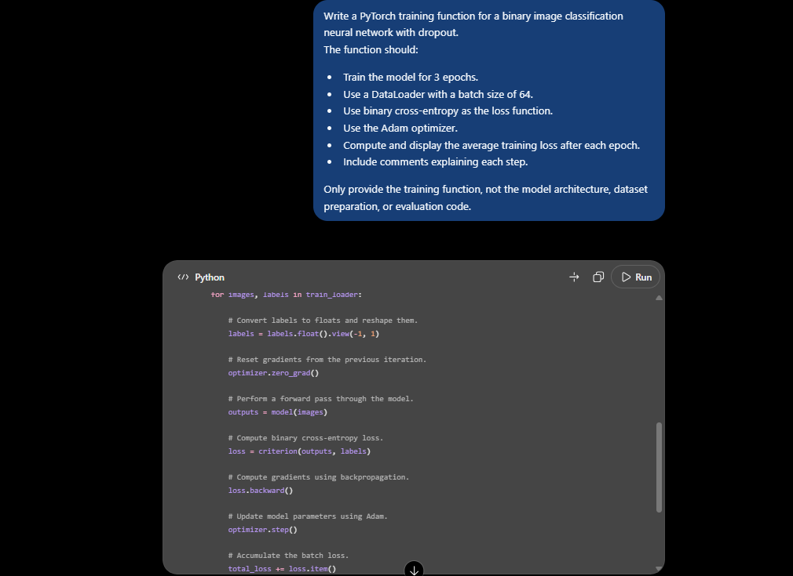
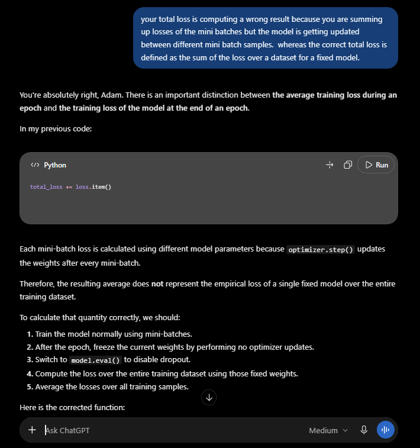
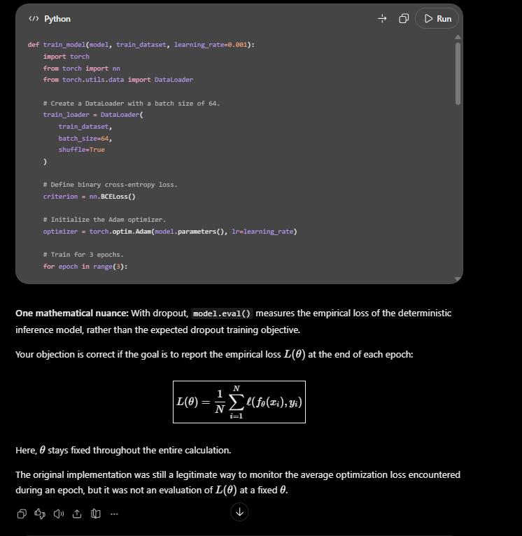

How can a language model write a working training loop and still miss what the quantity it prints actually means?
I recently had a short exchange with ChatGPT that left me thinking about the difference between producing plausible machine-learning code and understanding the mathematics behind it. I am sharing the interaction as a small case study, not as a claim that a particular model is always unreliable.
Readers can inspect the complete ChatGPT discussion here ↗. The screenshots below document the relevant parts of the exchange.
1. An unremarkable request
I asked for a function that would train a binary image classifier using PyTorch: three epochs, mini-batches of 64, binary cross-entropy, Adam, and an average training loss displayed after each epoch. The network used dropout. It is the kind of exercise found in introductory tutorials.
The generated training loop followed a familiar pattern: forward pass, loss, backward pass, optimizer step, then accumulate loss.item(). The problem was not with backpropagation. It was with what the accumulated number represented.

2. The quantity machine learning actually defines
For a dataset D = {(x₁, y₁), …, (xₙ, yₙ)} and a model with parameters θ, the empirical risk is
The crucial point is simple: θ is fixed across the entire sum. We are evaluating one model on every training example. The optimization algorithm can change θ between iterations, of course, but that is a separate process from evaluating L(θ) at a particular parameter value.
With mini-batch SGD or Adam, each batch usually sees a different parameter vector. If we average those batch losses as the epoch progresses, we are mixing measurements taken from successive versions of the model:
This does not equal L(θend) in general. A second, smaller issue is that taking the unweighted mean of batch means gives the final smaller batch the same weight as a full batch. For an overall sample mean, each batch should be weighted by its number of examples.
“What average loss did the optimizer encounter throughout the epoch?” and “What is the empirical risk of the final model on the dataset?” are two different questions.
3. My objection — and the answer that bothered me
I challenged the accumulated mini-batch loss on precisely those grounds. ChatGPT then agreed that the loss experienced during optimization was not the same as evaluating a single fixed model across the dataset. It proposed a second pass over the data after the epoch, without weight updates, to compute that value.

So far, that was a useful correction. But later, the response framed it as: “Your objection is correct if the goal is to report the empirical loss”. That conditional wording is exactly what I found strange.
The empirical-risk definition is not a special definition I invented for this conversation. It is the standard mathematical object used in machine-learning theory. When we write L(θ), the same θ appears in every term. This is how the objective is defined in conventional discussions of empirical risk minimization.
Yes, practitioners often log an online average of mini-batch losses and call the chart “training loss.” That is a useful diagnostic, and I am not arguing that it should never be used. My criticism is more specific: when the prompt asks for an average training loss and the generated code uses this online metric, the answer should explain what it measures. It should not silently leave the impression that it is the empirical loss of the final model.

4. Why dropout makes the distinction even more important
The original prompt included dropout. During training, dropout introduces random masks, so even a fixed vector of weights does not generally produce exactly the same stochastic output each time. PyTorch's model.eval() disables dropout. Thus, running a full pass with model.eval() computes the loss of the evaluation-mode network at its final weights.
If the desired objective is instead the expectation of the training-mode loss over dropout masks, we would have to estimate that expectation with repeated stochastic passes. Those are different, defensible measurements. The important thing is to identify which one the code reports.
For the usual deterministic end-of-epoch empirical-loss report, the essential pattern is:
# After the optimizer has finished the epoch:
model.eval()
loss_sum = 0.0
sample_count = 0
with torch.no_grad():
for images, labels in train_loader:
labels = labels.float().view(-1, 1)
outputs = model(images)
batch_mean = criterion(outputs, labels).item()
batch_size = labels.size(0)
loss_sum += batch_mean * batch_size
sample_count += batch_size
epoch_empirical_loss = loss_sum / sample_countThis assumes one scalar binary-cross-entropy loss per example, as in the original single-output classifier. It also assumes that the inputs and labels are on the same device as the model. No parameters change during this reporting pass.
5. The bigger issue is confident ambiguity
The fascinating part of this experiment is that the generated program was not random nonsense. It would train. The optimizer would update the weights. The displayed number would often decrease. To someone checking only whether the code runs and produces plausible output, everything could appear correct.
That is precisely why the mistake matters. A language model can reproduce a highly familiar coding convention without being sufficiently explicit about its mathematical meaning. And when challenged, it can sound accommodating while subtly treating a standard definition as a user-specific preference.
I do not think the lesson is “LLMs cannot code,” or even “never average mini-batch losses.” It is this: code that executes, code that resembles a tutorial, and code that computes the intended mathematical quantity are three different standards of correctness.
The original implementation was suitable for tracking a running optimization signal. It was wrong if presented as the empirical risk of the final network. Given the wording of my request, I think that distinction should have been made by default — not discovered only after I insisted on it.
The full shared ChatGPT conversation ↗ lets readers inspect the prompt, the code, my challenge, and the model's replies for themselves.
Further reading
- Cornell CS4787, Lecture 5: Empirical Risk Minimization — an explicit definition of the objective as a sum of losses at one parameter vector.
- PyTorch: BCELoss — the semantics of mean and sum reductions.
- PyTorch: Autograd mechanics — no-gradient computation and the distinction between training and evaluation modes.